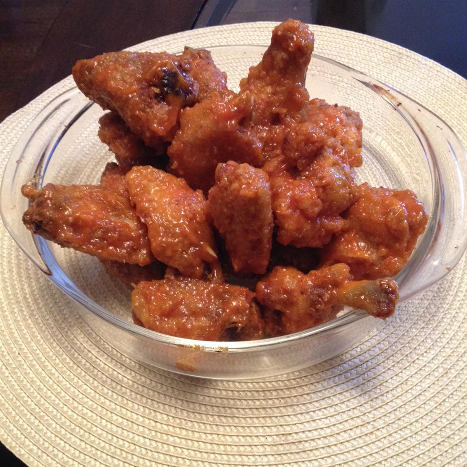

Hot Wings

Quick 20min recipe about how to make hot wings
A Buffalo wing in American cuisine is an unbreaded chicken wing section that is generally deep-fried and then coated or dipped in a sauce consisting of a vinegar-based cayenne pepper hot sauce and melted butter prior to serving.
- 4 pounds chicken wings
- 1 teaspoon garlic powder
- ½ teaspoon ground black pepper
- 1 cup tomato-based hot pepper sauce
- 2 tablespoons vinegar-based hot pepper sauce
- 1 teaspoon garlic powder
- ¼ cup grated Parmesan cheese
- 3 tablespoons butter, melted
- Step 1
Preheat an outdoor or indoor grill to a high heat. Lightly grease the grill.
Step 2
Season wings with garlic powder and ground black pepper. Cook wings on the preheated grill until they are very crispy. Turn the wings frequently as they will burn easily.
- Step 3
While the wings are grilling, in a large bowl, combine both hot sauces with garlic powder, Parmesan cheese and melted butter.
- Step 4
When the wings are finished cooking, place them in the large bowl of hot sauce mixture and stir until they are coated.